Guía de uso
Todo lo que necesitas para llevar los libros de tu negocio con Chirogra, paso a paso. No hace falta saber contabilidad: Chirogra hace los asientos por ti cada vez que facturas, cobras o pagas.
- Antes de empezar
- Crea tu empresa
- Inicio
- Clientes
- Facturas y cobros
- Estimados
- Gastos y recibos
- Proveedores y facturas por pagar
- Banca
- Sales tax
- Reportes
- Contabilidad y cierre
- Ajustes, iCloud y copias
- Glosario
1. Antes de empezar
Chirogra funciona igual en el iPhone, el iPad y el Mac; solo cambia dónde están las cosas:
- Mac y iPad: la barra lateral, con los grupos Negocio (Inicio, Ventas, Gastos, Banca, Reportes) y Libros (Contabilidad, Impuestos, Ajustes). En el Mac, la lista ocupa el centro y a la derecha está el inspector con el detalle de lo que elijas (se muestra u oculta con ⌥⌘I).
- iPhone: las pestañas Inicio · Ventas · Gastos · Banca · Más. En Más están Reportes, Impuestos, Contabilidad y Ajustes. Puedes cambiar las tres pestañas del medio y tener tus herramientas favoritas arriba de Más: ve a Más › Personalizar, o mantén pulsada una herramienta de Más y elige Añadir a Favoritos o Poner en la barra.
- Para añadir algo, usa el botón + (iPhone y iPad) o el botón de la barra superior del Mac (Nueva factura, Nuevo gasto…).
- En el Mac, ⌘K abre la búsqueda: clientes, facturas, gastos e importes.
Las capturas de esta guía son del Mac, con los datos de ejemplo de una empresa ficticia, «Ríos Diseño & Obra». ¿Quieres explorar antes de meter tus datos? En la primera pantalla toca Probar con datos de ejemplo. Cuando quieras empezar con tu empresa, toca Empezar con mi empresa en el aviso de Inicio (o en Ajustes › iCloud y copias): se borran los datos de ejemplo y vuelves a la pantalla para crear tu empresa.
Esta guía también se abre desde la app: Guía de uso en Ajustes (en el iPhone, al final de Más) y en el menú Ayuda del Mac.
2. Crea tu empresa
La primera vez que abres Chirogra te pide los datos de tu empresa. Aparecen en tus facturas y puedes cambiarlos cuando quieras en Ajustes › Perfil de la empresa.
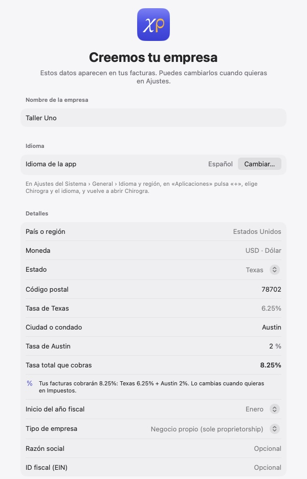
- Nombre de la empresa. Debajo, Idioma de la app te dice en qué idioma la ves y, con Cambiar…, dónde cambiarlo.
- El estado, que es obligatorio porque decide el sales tax que cobras. Al elegirlo, Chirogra muestra la tasa del estado (por ejemplo, Tasa de Texas 6.25 %).
- Si tu ciudad o condado cobra también su parte, escríbelo en Ciudad o condado y pon su tasa (Tasa de Austin 2 %). Chirogra suma las dos en Tasa total que cobras (8.25 %) y la deja como el impuesto de tus facturas nuevas. Si no sabes la tasa de tu ciudad, búscala con tu dirección en la web de impuestos de tu estado; puedes dejarla para después en Impuestos.
- El inicio del año fiscal y el tipo de empresa (negocio propio, LLC, corporación…; si el nombre termina en «LLC», ya sale elegido). La razón social y el ID fiscal (EIN) son opcionales. Los libros se llevan en dólares (USD).
- Toca Continuar y elige el tipo de negocio: Servicios profesionales, Comercio o tienda, Construcción y oficios, Restaurante y comida, Salud y bienestar o Independiente. Con él, Chirogra prepara un plan de cuentas adecuado a tu negocio, que puedes ajustar después.
- En el último paso, escribe el saldo de la cuenta del banco que usas para el negocio y, si tienes tarjeta de crédito, lo que debes. Propone la fecha de hoy: si empiezas los libros en una fecha pasada (por ejemplo, el 1 de octubre para registrar todo octubre), cambia la fecha y escribe el saldo de ese día, el que sale en tu extracto. Así Efectivo disponible empieza con el dinero que de verdad tienes. Si ahora no lo sabes, toca Saltar por ahora: podrás ponerlo desde Inicio.
- Toca Crear empresa. Al terminar puedes empezar la prueba gratis de 14 días.
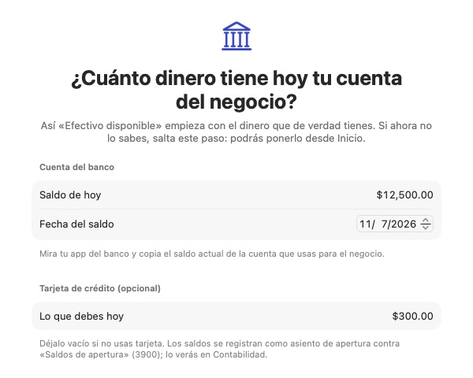
Los saldos se registran como un asiento de apertura contra «Saldos de apertura» (3900); lo verás en Contabilidad.
3. Inicio
Inicio es el resumen de tu negocio en el mes elegido: efectivo disponible, ingresos, gastos y ganancia neta, comparados con el mes anterior; la gráfica de ingresos y gastos de los últimos 12 meses; tus cuentas y las facturas por cobrar.
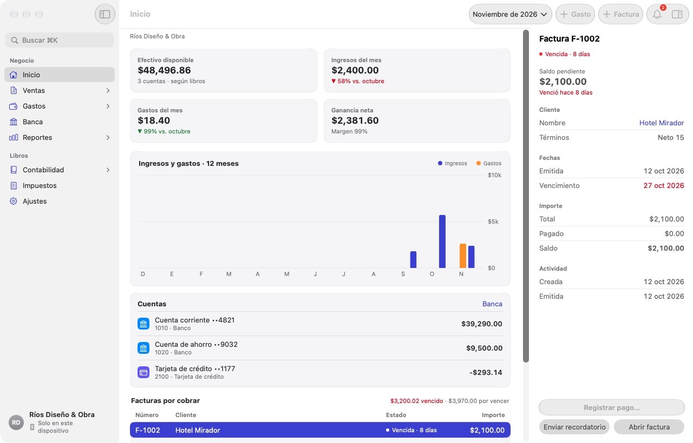
- Cambia de mes con el selector de la parte de arriba.
- Sales tax por pagar te dice cuánto sales tax has cobrado y aún debes a tu estado, y para cuándo («Vence el 20 ene»). Tócala para abrir Impuestos. Si no debes nada, dice que estás al día.
- Con una empresa nueva, Primeros pasos te lleva por lo que falta para dejar la app lista: sales tax, saldo del banco, primer cliente, factura, cobro y gasto.
- Los botones + Gasto y + Factura son atajos para lo más frecuente.
- La campana reúne los avisos: facturas vencidas, facturas de proveedor que vencen pronto, pagos programados, gastos recurrentes generados y el sales tax por pagar.
4. Clientes
En Ventas › Clientes, añade a tus clientes con + (o Nuevo cliente en el Mac). Solo el nombre es obligatorio.
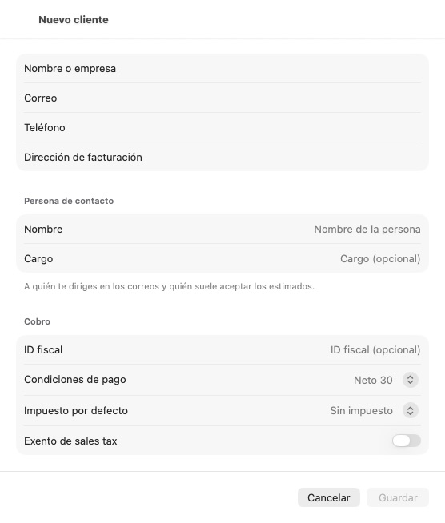
- Condiciones de pago (por ejemplo, Neto 30) e impuesto por defecto: se usan en cada factura nueva de ese cliente.
- Exento de sales tax: para clientes que revenden o están exentos; sus facturas no llevan impuesto.
- En la ficha del cliente verás su saldo, lo vencido y sus facturas abiertas, y puedes guardarle notas con fecha.
5. Facturas y cobros
Ventas › Facturas muestra todas tus facturas con su estado (borrador, emitida, enviada, pago parcial, vencida, pagada) y lo que tienes por cobrar.
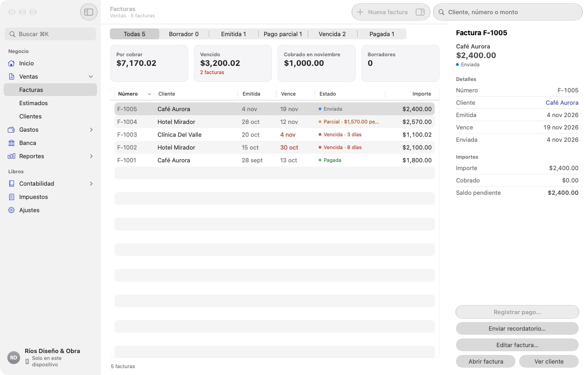
Crear una factura
- Toca + o Nueva factura.
- Elige el cliente. El número, las condiciones y el vencimiento se rellenan solos.
- Añade los artículos: producto o servicio, cantidad y precio. Cada línea indica a qué cuenta de ingresos va y si es gravable. Usa Añadir línea para más.
- Revisa el impuesto y el total. Puedes aplicar un descuento y escribir un mensaje para el cliente.
- Toca Emitir factura, o Guardar borrador si aún no está lista. Vista previa muestra el PDF tal como lo verá tu cliente.
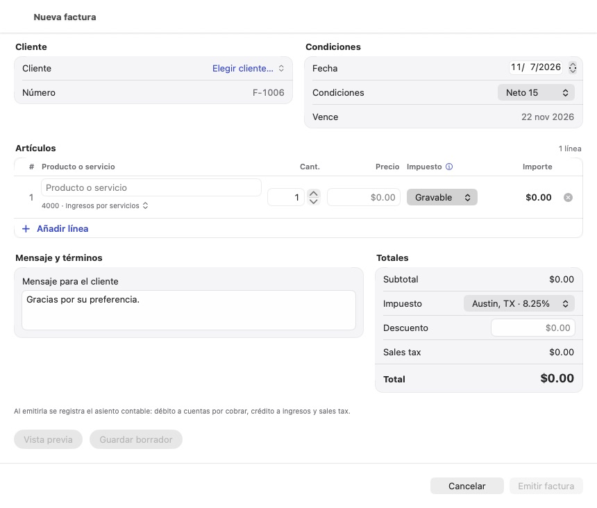
Al emitir, Chirogra registra el asiento contable por ti: cuentas por cobrar contra ingresos y sales tax. Un borrador no afecta a tus libros.
Si la factura no tiene impuesto, revisa que haya una tasa elegida en Impuesto; si aún no tienes ninguna, Añadir tasa… la crea desde ahí mismo.
Corregir una factura emitida
Mientras el cliente no haya pagado nada, una factura emitida se puede corregir: ábrela y toca Editar (en el iPad, Editar factura en la barra; en el Mac, Editar factura… en el inspector). Conserva su número; Chirogra anula el asiento anterior, registra el nuevo y lo anota como Editada en su actividad.
Enviar la factura
Desde la factura, Enviar factura… prepara un correo con el PDF adjunto para el correo del cliente. Si se retrasa, Enviar recordatorio… le manda un aviso amable con el saldo pendiente.
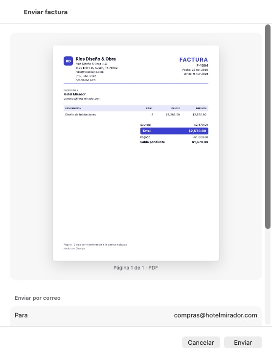
Registrar un cobro
Cuando el cliente te pague, abre la factura y toca Registrar pago…:
- Total o Parcial (escribe el monto recibido; el resto queda pendiente).
- Método (transferencia, cheque, tarjeta…), la cuenta donde lo depositas y la fecha.
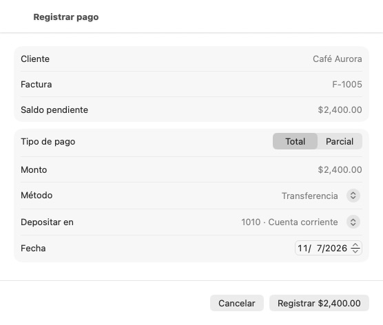
La factura pasa a Pagada o Pago parcial y el dinero aparece en Banca, en la cuenta elegida.
Para cambiar el aspecto de tus facturas (color, estilo y logo), ve a Ajustes › Plantilla de factura.
Notas de crédito y devoluciones
Si le haces un descuento o una devolución al cliente sobre una factura ya emitida, no la edites: abre la factura y, en Más acciones, toca Nota de crédito (o Nota de crédito o devolución si ya está pagada). Escribe el importe a acreditar, el motivo y la fecha, y toca Emitir. La nota baja los ingresos y lo que el cliente te debe; si acredita más que el saldo, lo que sobra queda a favor del cliente para otra factura o para reembolsárselo. Si una factura queda saldada con un cobro y una nota, su detalle lo dice por separado (Saldada: cobrado $2,000.00 + crédito $400.00).
6. Estimados
En Ventas › Estimados preparas presupuestos con el mismo editor que las facturas y los envías igual. Cuando el cliente acepte, usa Convertir en factura:
- Todo el estimado: una sola factura por el total.
- Anticipo del 50 %: factura la mitad y el resto queda pendiente en el estimado.
- Elegir líneas: facturas por etapas o partes del trabajo.
Debajo está la fecha de la factura. Chirogra propone el día en que el cliente aceptó el estimado (Más acciones › Marcar como aceptado…); cámbiala si facturas otro día.
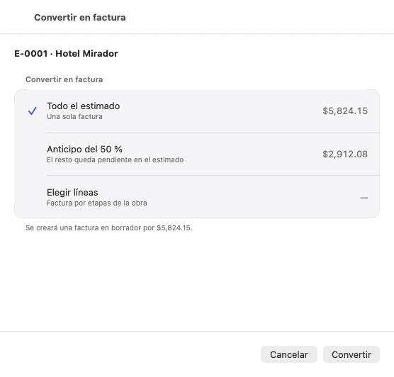
La factura se crea como borrador para que la revises antes de emitirla. El detalle del borrador muestra su fecha y su vencimiento: compruébalos antes de tocar Emitir factura, porque la venta cuenta en el mes de esa fecha.
7. Gastos y recibos
En Gastos registras lo que pagas al momento: compras, gasolina, software… Toca + o Nuevo gasto.
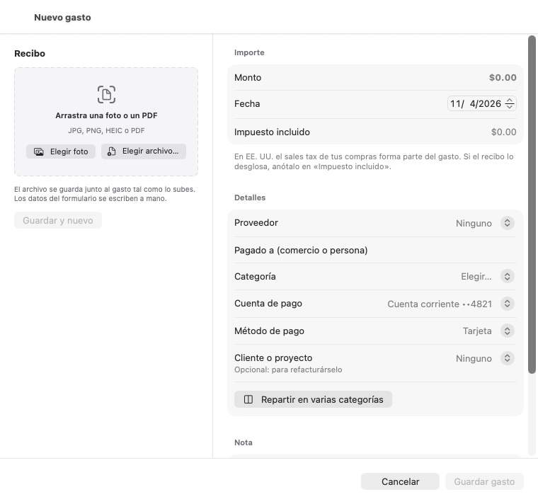
- Recibo: arrastra una foto o un PDF, o usa Elegir foto / Elegir archivo…. Se guarda junto al gasto; el IRS pide conservarlo.
- Monto y fecha. Impuesto incluido empieza en $0: es solo informativo, porque en EE. UU. el sales tax de tus compras forma parte del gasto. Si el recibo desglosa el impuesto, escríbelo o toca Calcular con… (la tasa de tu empresa). El alquiler, los seguros y los servicios no suelen llevarlo. Si lees un recibo con la cámara, Chirogra pone el impuesto que encuentre.
- Proveedor: elige uno de la lista o crea uno con Nuevo proveedor…. Si es una compra suelta, deja Ninguno y escribe en Pagado a a quién le pagaste.
- Categoría (la cuenta de gasto), la cuenta de pago (de dónde salió el dinero) y el método de pago, que depende de la cuenta: con el banco, tarjeta de débito, transferencia o cheque; con la tarjeta de crédito, tarjeta de crédito; con la caja, efectivo.
- Opcional: cliente o proyecto si se lo vas a refacturar, y Repartir en varias categorías si una compra mezcla cosas.
- Guardar gasto, o Guardar y nuevo para seguir con el siguiente.
- La casilla Solo sin recibo de la lista te muestra lo que aún no tiene comprobante.
- Editar un gasto ya registrado no borra nada: Chirogra anula el asiento anterior y registra el nuevo, y lo verás en su historial. Si el gasto ya está conciliado con el banco y solo cambias la categoría (o el proveedor, o la nota), la conciliación no se toca. Si cambias el importe, la fecha o la cuenta de pago, Chirogra te avisa antes, porque eso sí cambia lo conciliado.
- Comprar equipo (una computadora, una máquina, un vehículo): regístralo como un gasto más, pero en Categoría elige la cuenta del grupo Compras de equipo y pagos por adelantado (por ejemplo, 1500 · Equipo). Así queda como un bien de la empresa y no como gasto del mes; tu contador decide cómo depreciarlo.
- Recurrentes (botón de la parte de arriba): pagos que se repiten, como una suscripción o el alquiler. Con cargo automático se registran solos al llegar la fecha; sin él, quedan por confirmar para que revises el importe.
8. Proveedores y facturas por pagar
Cuando un proveedor te manda una factura que pagarás más adelante, regístrala en Gastos › Facturas por pagar con Nueva factura de proveedor. Así sabes cuánto debes y cuándo vence. El vencimiento sale de las condiciones del proveedor y se mueve con la fecha de la factura; puedes cambiarlo a mano.
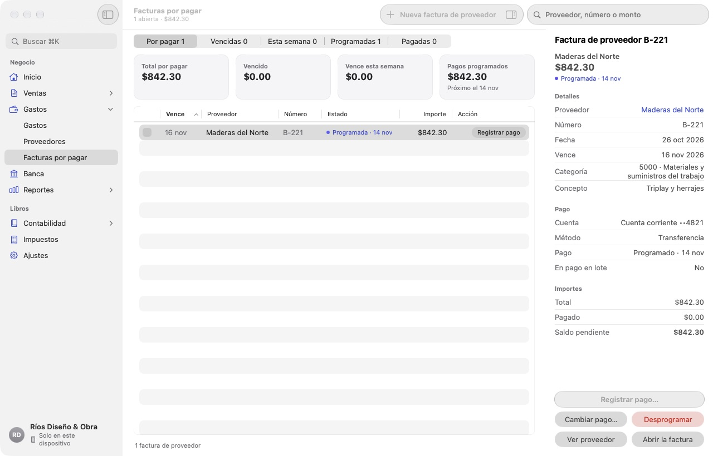
- Registrar pago… cuando la pagues: elige la cuenta, el método y la fecha.
- Programar un pago: Chirogra te lo recuerda en la fecha elegida (el dinero se mueve desde tu banco, no desde la app). Puedes cambiarlo o cancelarlo.
- Pago en lote: marca varias facturas en la primera columna y págalas juntas desde una cuenta.
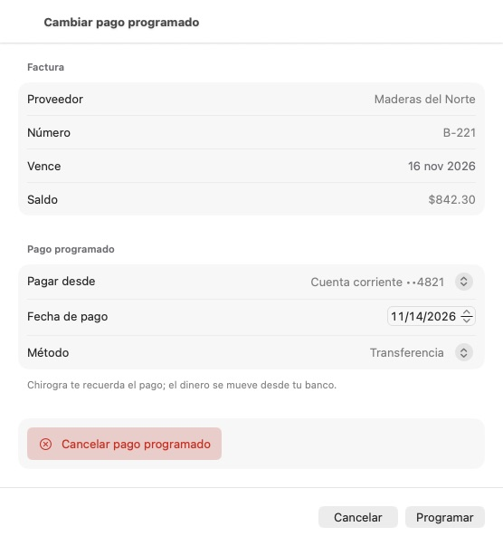
En Gastos › Proveedores guardas sus datos, sus condiciones de pago, la categoría habitual, si es sujeto a 1099 y su W-9. Su ficha muestra lo gastado en el año y lo que le debes, y te avisa cuando tienes que enviarle el 1099-NEC.
9. Banca
Banca muestra tus cuentas (corriente, ahorro, tarjeta de crédito) con su saldo en libros y los movimientos de cada mes: cobros, pagos, gastos y transferencias.
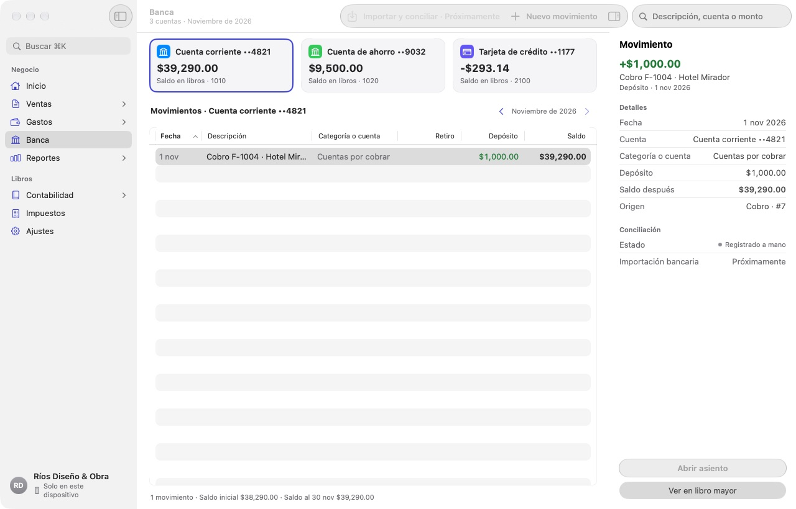
- Los movimientos se crean solos al cobrar facturas, pagar facturas de proveedor y registrar gastos.
- Efectivo disponible, en Inicio, suma la caja y los bancos y resta lo que debes en tarjetas (lo dice debajo de la cifra). Por eso puede ser menor que el efectivo del flujo de efectivo, que no resta las tarjetas.
Importar el extracto del banco
- Descarga de la web de tu banco el extracto del mes en CSV u OFX/QFX.
- En Banca, abre la cuenta y toca Importar extracto. Elige el archivo. Con un CSV, Chirogra adivina las columnas (fecha, descripción, importe) y te deja corregirlas; la próxima vez las recuerda. Si importas dos veces el mismo archivo, no duplica nada.
- Los movimientos nuevos quedan en Por revisar. Para cada uno, Chirogra propone qué hacer:
- Emparejar con algo que ya registraste (un cobro, un gasto, un pago). Es lo normal si llevas tus facturas y gastos al día.
- Categorizar: crea el gasto o el ingreso que falta, con su categoría.
- Transferencia: dinero entre tus propias cuentas (por ejemplo, el pago de la tarjeta).
- Excluir: lo que no es del negocio o está duplicado.
- Con Reglas le enseñas a Chirogra a categorizar solo lo que se repite (la comisión del banco, una suscripción).
Conciliar
Conciliar es comprobar, con el extracto delante, que tus libros y el banco dicen lo mismo. Toca Conciliar, escribe la fecha del extracto y su saldo final (en una tarjeta, lo que debes según el extracto) y marca las partidas que aparecen en él. Lo emparejado ya sale marcado. Cuando la diferencia llega a $0.00, toca Terminar conciliación. La cuenta queda Conciliada al esa fecha y la siguiente conciliación empieza donde terminó esta.
Mover dinero entre cuentas, pagar la tarjeta o sacar dinero para ti
Estos movimientos no son gastos ni ingresos. Si vienen en el extracto, usa Transferencia en Por revisar. Si quieres registrarlos a mano, toca Mover dinero: en el iPhone está en el + de Inicio; en el iPad y el Mac, en la barra de Inicio; y en la ficha de cada cuenta de Banca, arriba, con esa cuenta ya elegida. Elige:
- Mover dinero entre cuentas: un traspaso al ahorro.
- Pagar la tarjeta: el pago de la tarjeta de crédito desde la cuenta corriente.
- Saqué dinero para mí: un retiro del dueño.
- Puse dinero de mi bolsillo: una aportación.
Solo eliges las cuentas, el importe y la fecha; Chirogra pone cada importe en su lado. También están en Más › Contabilidad › Asientos de diario › Nuevo asiento.
En la ficha de una cuenta, cada movimiento dice si el dinero entró o salió (en la tarjeta, si fue un cargo o un pago). Con el plan para contadores se ven los débitos y créditos.
10. Sales tax
En Impuestos ves cuánto sales tax has cobrado en el trimestre, lo que has pagado, el saldo y la fecha límite para pagarlo a tu agencia.
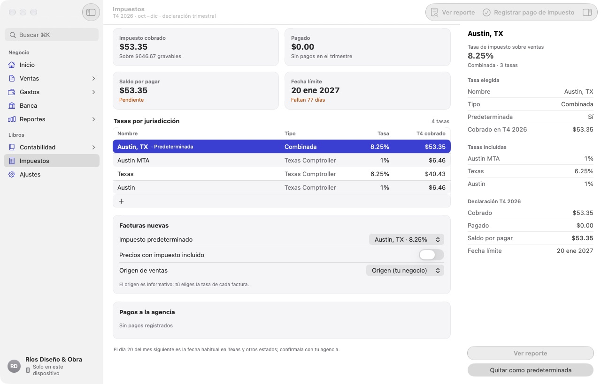
- Tasas por jurisdicción: la tasa de tu estado ya está desde que creaste la empresa. Una tasa combinada suma varias (en el ejemplo, Austin, TX = 6.25 % del estado + 1 % de la ciudad + 1 % de transporte). Las tasas locales las introduces tú: confírmalas con la agencia de tu estado.
- Añadir la tasa de tu ciudad o condado (si no lo hiciste al crear la empresa): toca +, escribe el nombre y solo la parte local (en Austin, 2 %). Con Sumar a Texas (6.25%) y usarla en las facturas nuevas, Chirogra crea la tasa combinada y la deja como predeterminada. La agencia ya sale elegida: en muchos estados, como Texas, la del estado cobra también las tasas locales.
- Facturas nuevas: el impuesto predeterminado que llevará cada factura, si tus precios incluyen impuesto y el origen de las ventas.
- Registrar pago de impuesto cuando pagues a la agencia; queda en Pagos a la agencia.
- Ver reporte abre el reporte de impuesto sobre ventas, útil para tu declaración.
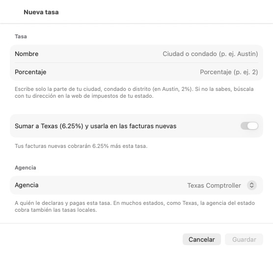
11. Reportes
En Reportes tienes lo que pide tu contador o preparador de impuestos:
- Estado de resultados (ingresos, costos, gastos y ganancia).
- Balance general (lo que tienes, lo que debes y tu capital).
- Balanza de comprobación.
- Antigüedad por cobrar y por pagar (quién te debe y a quién debes, por días).
- Impuesto sobre ventas.
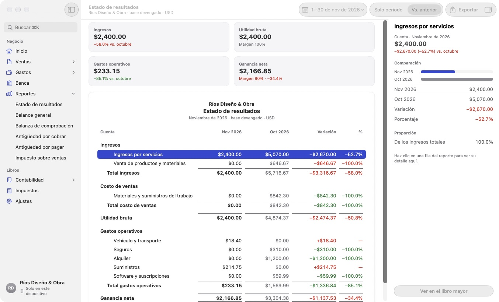
Elige el periodo (mes, trimestre, año o fechas propias) y compáralo con el anterior con Vs. anterior. Toca una fila para ver su detalle o abrirla en el libro mayor. Exportar genera un PDF o un CSV para enviarlo o abrirlo en una hoja de cálculo.
12. Contabilidad y cierre
Para el día a día no necesitas esta sección; está para tu contador o para cuando quieras ir al detalle.
- Plan de cuentas: todas tus cuentas agrupadas (activos, pasivos, capital, ingresos y gastos). Puedes añadir cuentas y subcuentas, cambiarles el nombre o archivar las que no uses.
- Asientos de diario: todos los asientos, los automáticos y los manuales. Nuevo asiento te pregunta qué quieres registrar: Puse dinero de mi bolsillo en el negocio, Saqué dinero del negocio para mí, Pasé dinero entre mis cuentas o Asiento a mano, para tu contador. En los tres primeros solo eliges la cuenta y el importe, y Chirogra pone cada importe en su lado (Así queda en tus libros). En el asiento a mano, los débitos deben sumar lo mismo que los créditos.
- Libro mayor: los movimientos de cada cuenta con su saldo.
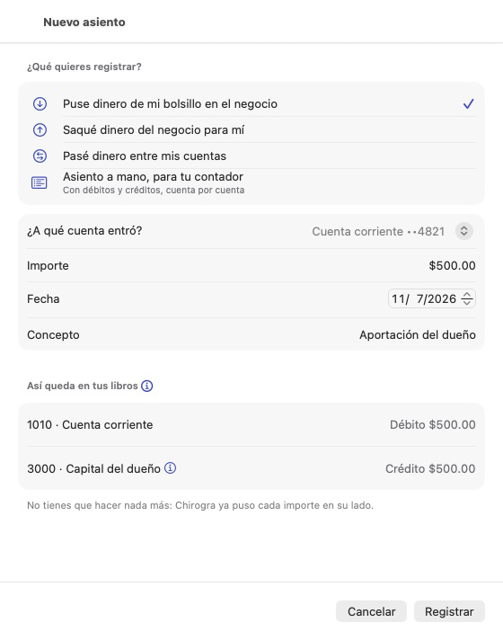
Los asientos registrados no se borran ni se modifican: para corregir uno, se revierte y se registra el correcto. Así tus libros siempre cuadran y queda el rastro de cada cambio.
Cierre de periodo
Cuando hayas revisado un mes (o se lo hayas entregado a tu contador), ciérralo en Contabilidad › Cierre de periodo para que nadie lo cambie por error. Chirogra te muestra antes una lista de comprobación (facturas emitidas, gastos registrados, recibos que faltan, sales tax).
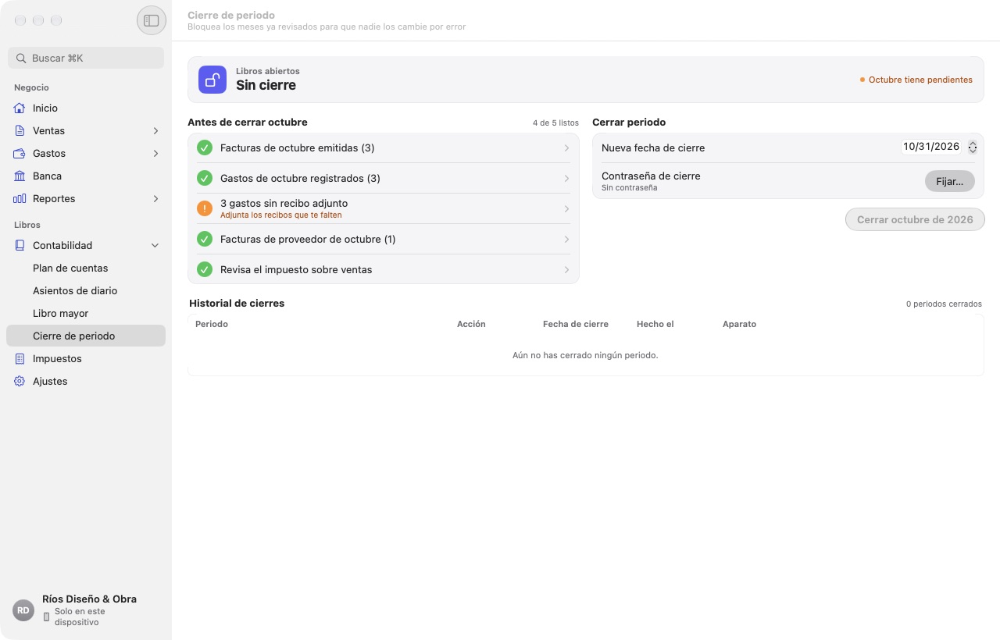
- Elige la nueva fecha de cierre y toca el botón Cerrar del mes (por ejemplo, «Cerrar octubre de 2026»). Si todavía no tienes contraseña de cierre, Chirogra te ofrece Fijar contraseña y cerrar o Cerrar sin contraseña.
- Con una contraseña de cierre, nadie puede reabrir un periodo ni registrar con una fecha cerrada sin escribirla. Te la recomendamos si alguien más usa la app o si ya entregaste el mes a tu contador.
- Si algo cae en un mes cerrado (un recibo que llegó tarde), Chirogra te ofrece Registrar con fecha el primer día abierto, que es lo habitual y no cambia los reportes ya entregados. Para registrarlo con su fecha, escribe la contraseña de cierre o, sin contraseña, el motivo, que queda en la bitácora.
- El historial de cierres guarda cada cierre y reapertura.
13. Ajustes, iCloud y copias
- Perfil de la empresa: nombre, dirección, contacto e ID fiscal que salen en tus facturas.
- Plantilla de factura: el color, el estilo (clásica o compacta) y el logo, con una vista previa.
- Moneda y formatos.
- iCloud y copias: la sincronización con iCloud, la suscripción y las copias de seguridad.
- Seguridad: el bloqueo con Face ID o Touch ID, y si tienes fijada la contraseña de cierre que protege los meses cerrados.
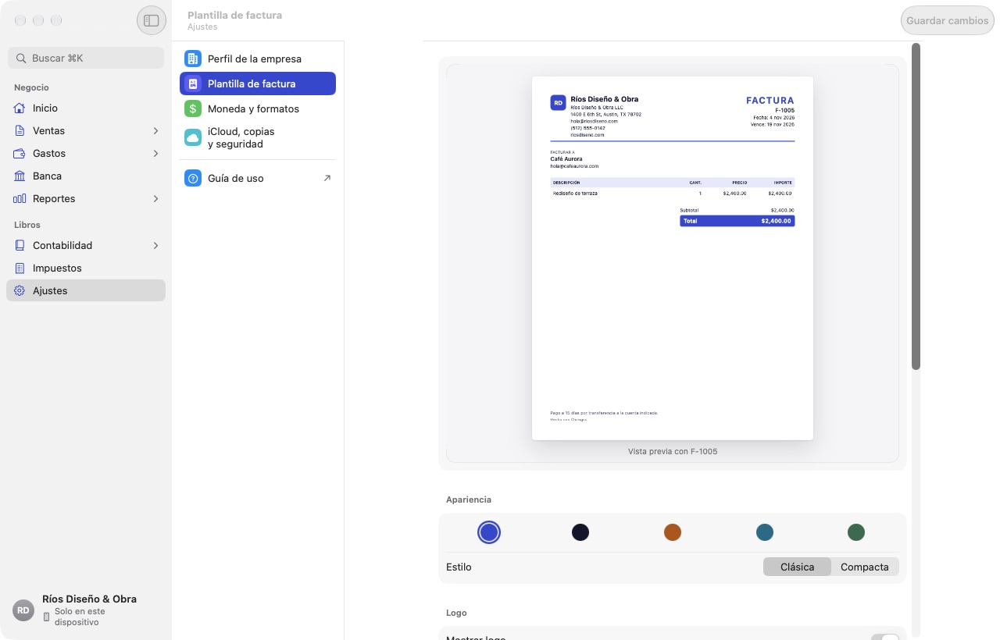
Tus libros en todos tus aparatos
Activa Sincronizar con iCloud y vuelve a abrir la app. Tus libros viajan cifrados en tu cuenta privada de iCloud entre tu iPhone, iPad y Mac.
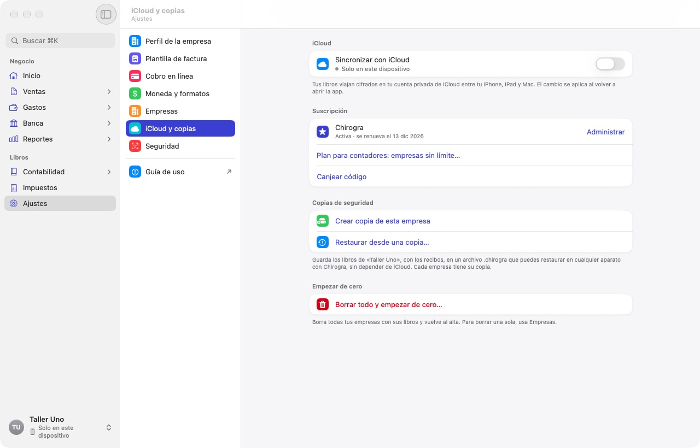
Copias de seguridad
Crear copia ahora guarda tus libros, con los recibos, en un archivo .chirogra que
puedes dejar donde quieras: Archivos, iCloud Drive o una memoria USB. Con Restaurar desde una copia…
la recuperas en cualquier aparato con Chirogra; antes, Chirogra guarda una copia de lo que tenías y puedes volver atrás
con Deshacer la última restauración.
Haz una copia de vez en cuando, sobre todo antes de cerrar el año.
14. Glosario
Qué es cada menú de Chirogra y para qué sirve, en pocas palabras. Al final están las palabras de contabilidad que verás en la app. En el iPhone, Reportes, Impuestos, Contabilidad y Ajustes están dentro de Más.
Inicio
- Inicio
- El resumen de tu negocio: el efectivo que tienes, lo que ganaste y gastaste en el mes, lo que te deben y lo que debes. Sirve para saber cómo vas sin abrir ningún reporte.
- Primeros pasos
- Una lista de tareas para dejar la app lista (empresa, sales tax, banco, primer cliente, factura, cobro y gasto). Cada paso te lleva a donde se hace. Puedes ocultarla cuando termines.
- Sales tax por pagar
- Cuánto sales tax cobraste y todavía le debes a tu estado, y la fecha límite. Te lleva a Impuestos.
- Avisos (la campana)
- Lo que necesita tu atención: facturas vencidas, pagos programados, gastos recurrentes por confirmar.
- Acciones rápidas
- Botones para crear una factura, un gasto o un cliente sin buscar el menú.
Ventas
- Facturas
- Los cobros que le pides a tus clientes. Aquí creas, emites y envías facturas y registras los pagos que recibes.
Cada factura pasa por estados:
- Borrador: todavía no cuenta en tus libros; la puedes cambiar libremente.
- Emitida: ya cuenta como ingreso y el cliente te debe ese dinero.
- Enviada: emitida y, además, ya se la mandaste al cliente por correo.
- Pago parcial: el cliente pagó una parte.
- Vencida: pasó la fecha de pago y sigue sin pagarse.
- Pagada: cobrada completa; el dinero entró a tu banco.
- Anulada: cancelada; deja de contar, pero queda en el historial.
- Estimados
- Un presupuesto o cotización para un cliente. No cuenta en tus libros. Cuando el cliente acepta, lo conviertes en factura (completa, un anticipo o por partes).
- Clientes
- Las personas o empresas a las que les vendes: su contacto, sus condiciones de pago, su impuesto y tus notas. En su ficha ves lo que te deben.
- Registrar pago
- Anota que el cliente te pagó (todo o una parte), cómo pagó y a qué cuenta entró el dinero.
- Nota de crédito
- Un descuento o una devolución sobre una factura ya emitida. Baja lo que el cliente te debe sin borrar la factura.
- Recordatorio
- Un correo para recordarle al cliente una factura pendiente.
- Plantilla de factura
- El aspecto de tus facturas en PDF: color, estilo y logo (está en Ajustes).
Gastos
- Gastos
- Lo que ya pagaste por tu negocio: materiales, gasolina, publicidad, servicios. Cada gasto lleva una categoría y, si quieres, la foto del recibo. Los gastos bajan tu ganancia.
- Por pagar (facturas por pagar)
- Facturas que te mandan tus proveedores y que pagarás más adelante. Puedes programar el pago o pagar varias a la vez.
- Recurrentes
- Gastos que se repiten (la renta, el seguro, una suscripción). Los creas una vez y Chirogra los registra cada mes, solo o después de que tú lo confirmes.
- Proveedores
- Las personas o empresas a las que les compras. Guardas su W-9 y su forma de pago, y Chirogra te avisa cuando tienes que enviarles el 1099-NEC.
- Categoría
- El tipo de gasto (materiales, seguros, publicidad…). Sirve para que el estado de resultados te diga en qué se va tu dinero.
- Repartir en varias categorías
- Divide un solo recibo entre varios tipos de gasto, por ejemplo materiales y herramientas en la misma compra.
- Impuesto incluido
- El sales tax que pagaste en tu compra. Chirogra lo calcula con la tasa de tu empresa y puedes cambiarlo. Es informativo: en EE. UU. forma parte del gasto.
- Cliente o proyecto
- Liga un gasto a un cliente o a una obra, por ejemplo para cobrárselo después.
Banca
- Banca
- Tus cuentas de banco, caja y tarjeta de crédito, con su saldo y los movimientos de cada mes. Sirve para compararlo con tu banco y ver que no falte nada.
- Saldo en libros
- El saldo según lo que has registrado en Chirogra. Puede diferir del banco si falta registrar algo o si un cheque todavía no se cobra.
- Importar extracto
- Trae los movimientos de tu banco desde un archivo CSV u OFX para revisarlos en Chirogra.
- Por revisar
- Los movimientos importados que aún no has emparejado, categorizado o excluido.
- Conciliar
- Comprobar con el extracto que tus libros y el banco dicen lo mismo, partida por partida, hasta que la diferencia sea $0.00.
Reportes
- Estado de resultados
- Cuánto vendiste, cuánto gastaste y cuánto ganaste en un periodo. También se le dice «pérdidas y ganancias» o P&L.
- Balance general
- Una foto de tu negocio en una fecha: lo que tienes, lo que debes y lo que es tuyo (capital).
- Balanza de comprobación
- El saldo de todas tus cuentas en una lista. La usa tu contador para revisar que los libros cuadren.
- Antigüedad por cobrar
- Quién te debe y desde hace cuántos días. Sirve para saber a quién cobrar primero.
- Antigüedad por pagar
- A quién le debes y desde hace cuántos días.
- Impuesto sobre ventas
- El sales tax que cobraste en el periodo, por tasa. Sirve para tu declaración.
- Exportar
- Saca el reporte en PDF (para enviarlo) o CSV (para una hoja de cálculo).
Contabilidad
- Plan de cuentas
- La lista de todas las «cajitas» donde Chirogra clasifica tu dinero: bancos, lo que te deben, lo que debes, tus ingresos y cada tipo de gasto. Viene lista según tu tipo de negocio; puedes añadir o archivar cuentas.
- Asientos de diario
- El registro contable de cada movimiento. Chirogra los hace solo cuando facturas, cobras o pagas. Con Nuevo asiento registras lo demás: una aportación o un retiro del dueño, un traspaso entre cuentas o un ajuste que te pida tu contador.
- Libro mayor
- Todos los movimientos de una cuenta, con su saldo después de cada uno.
- Cierre de periodo
- Cierra un mes o un año ya revisado para que nadie lo cambie por error. Puedes protegerlo con una contraseña de cierre; sin ella, registrar algo con una fecha cerrada pide el motivo.
Impuestos
- Resumen
- Cuánto sales tax cobraste en el trimestre, cuánto le debes a tu estado y para cuándo. Ahí registras el pago cuando lo hagas.
- Tasas
- Los porcentajes de sales tax que cobras: el de tu estado y, si aplica, el de tu condado o ciudad. Con Nueva tasa añades la parte local y Chirogra la suma a la del estado.
- Tasa combinada
- La suma de las tasas que se cobran juntas en una venta. Por ejemplo, Austin, TX: 6.25 % del estado + 2 % local = 8.25 %.
- Impuesto predeterminado
- La tasa que llevan tus facturas nuevas si no eliges otra.
- Agencia
- La oficina del gobierno a la que le pagas el sales tax (en Texas, el Texas Comptroller).
- Precios con impuesto incluido
- Actívalo si tus precios ya llevan el impuesto dentro; Chirogra lo separa al emitir.
- Periodo de declaración
- Cada cuánto declaras y pagas el sales tax: mensual, trimestral o anual, según te asigne tu estado.
Ajustes
- Perfil de la empresa
- El nombre, la dirección, el tipo de empresa y el ID fiscal que salen en tus facturas.
- iCloud y copias
- Sincroniza tus libros entre tus aparatos y crea o restaura una copia de seguridad.
- Seguridad
- Protege la app con Face ID o Touch ID y te dice si los meses cerrados tienen contraseña de cierre.
- Suscripción
- Tu plan de Chirogra. Si vence, puedes seguir viendo tus libros y sacar copias, pero no registrar nada nuevo.
- Empezar con mi empresa
- Sale mientras usas los datos de ejemplo: los borra y te lleva a crear tu empresa.
- Personalizar (iPhone)
- En Más. Pestañas elige qué tres herramientas van entre Inicio y Más en la barra de abajo (por ejemplo, Asientos de diario o un reporte) y en qué orden; Favoritos pone arriba de Más las que uses ahora. Se guarda solo en ese aparato y se vuelve a lo de siempre con Restablecer la barra.
Palabras de contabilidad
- Activo
- Lo que tiene tu negocio: dinero en el banco, lo que te deben, equipo y vehículos.
- Pasivo
- Lo que debe tu negocio: tarjetas, préstamos, facturas de proveedores, el sales tax que cobraste y aún no pagas.
- Capital
- Lo que es del dueño: lo que pusiste en el negocio más lo que ha ganado, menos lo que has retirado.
- Ingreso
- Lo que vendes. En Chirogra cuenta al emitir la factura, aunque todavía no te paguen.
- Ganancia y margen
- Ganancia = ingresos − gastos. El margen es la ganancia como porcentaje de lo vendido.
- Cuentas por cobrar
- El dinero que tus clientes te deben por facturas emitidas.
- Cuentas por pagar
- El dinero que les debes a tus proveedores.
- Asiento
- El registro de un movimiento en tus libros. Siempre toca dos cuentas o más: de una sale y a otra entra.
- Débito y crédito
- Los dos lados de cada asiento. Deben sumar lo mismo; por eso los libros siempre cuadran. Chirogra los pone por ti.
- Saldo de apertura
- El dinero que ya tenías (o debías) el día que empezaste a usar Chirogra.
- Reversión
- Un asiento que deshace otro. Chirogra corrige así lo que ya está en tus libros: revierte lo anterior y registra lo correcto, y los dos quedan en el historial.
- Gravable y exento
- Gravable: lleva sales tax. Exento: no lo lleva (por ejemplo, un cliente con certificado de reventa).
- Sales tax
- El impuesto sobre ventas que cobras a tus clientes por cuenta de tu estado. No es tuyo: lo guardas y se lo pagas a la agencia.
- Términos (Neto 30)
- Los días que tiene el cliente para pagarte. «Neto 30» = 30 días desde la fecha de la factura.
- Año fiscal
- Los 12 meses de tu año contable. Para casi todos los negocios pequeños es de enero a diciembre.
- EIN
- El número de identificación fiscal de tu empresa ante el IRS.
- W-9 y 1099-NEC
- El W-9 es el formulario con los datos fiscales de un proveedor. Con él llenas el 1099-NEC, que envías a cada contratista al que le pagaste $2,000 o más en el año (desde 2026).
¿Necesitas ayuda?
Mira las preguntas frecuentes (suscripción, cancelación, qué pasa si dejas de pagar) o escríbenos a soporte@chirogra.com.